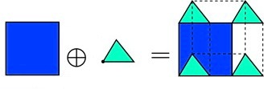
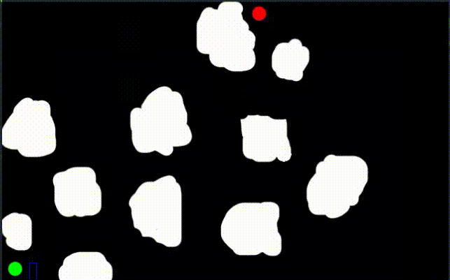

Navigating 2D objects using 3D configuration spaces
Using 3D configuration spaces for navigating 2D objects with A* pathfinding algorithm

Pathfinding is a very interesting problem. There are already many popular algorithms for finding a path from point A to B such as Dijkstra’s algorithm and A* algorithm. However, they operate on the assumption that your path can *squeeze* through the smallest of gaps. Clearly, this would be a problem if you wanted to find a path for a finite object. The object wouldn’t be able to squeeze through small gaps the pathfinding algorithm may take. So, what do we do? We need to modify the algorithm to take into account the dimensions of the object. Perhaps we could modify the map itself?
Minkowski Sum

Let’s lock in the orientation of the object for the moment. We can take the map and replace it with its Minkowski sum with our object. Minkowski sum, when taken with our object (but reflected about the origin), is like the map of where our object couldn’t be. Luckily, if one of our operands is a convex polygon (in this case, our object), taking the Minkowski sum is quite simple. More information on how to implement it can be found here.
Once we have our new map, we can simply apply our old pathfinding algorithm to it and obtain a path. However, even though our object can feasibly navigate the path we calculate using this method, it won’t be the most optimal as we have entirely ignored a degree of freedom – orientation!
For example, if our object was a long rectangle, it may be able to fit through a gap from one side but not the other. We need to be able to take this into account. Enter: the configuration space.
Configuration Spaces
The truth is, we’ve already been using the configuration space for a while. We’re just about to add another dimension to it for handling orientation.
Remember how we previously locked in our orientation in the previous section? We can, in a loop, calculate the Minkowski sums of all these orientations and stack them on top of each other to obtain a 3D configuration space. Depending upon our required granularity for orientations, we can generate a Minkowski sum for every x radians, which would give us x/(2*pi) slices in our 3D plane. Naturally, increasing the granularity speeds up the simulation at the cost of quality.
Here is an example in C++ and OpenCV for calculating a configuration space “slice” for a rectangular object at a given angle using the contours of our map:
void createCSpace(float angle, std::vector< std::vector<cv::Point> > contours)
{
OCVWrapper cPlane(int(imgMap->getWidth()), int(imgMap->getHeight()), false);
cPlane.drawContours<uchar>(contours, 255, CV_FILLED);
std::vector< std::vector<cv::Point> > polygons;
for(int j = 0; j < contours.size(); ++j)
{
for(int i = 0; i < contours[j].size();++i)
{
cv::vector<cv::Point> rotatedRect;
cv::Point origin = contours[j][i];
// Coordinates reflected about origin for the minkowski sum to give the 2D configurational space
rotatedRect.clear();
rotatedRect.push_back(origin);
rotatedRect.push_back(origin + cv::Point(-bHeight*sin(angle), -bHeight*cos(angle)));
rotatedRect.push_back(origin + cv::Point(-bHeight*sin(angle) + (-bWidth)*sin(angle + M_PI/2), -bHeight*cos(angle) + (-bWidth)*cos(angle + M_PI/2)));
rotatedRect.push_back(origin + cv::Point(-bWidth*sin(angle + M_PI/2), -bWidth*cos(angle + M_PI/2)));
polygons.push_back(rotatedRect);
}
}
cPlane.drawPoly<uchar>(polygons, 255);
cSpace.push_back(cPlane);
}
Calculating the path
Once we have obtained the configuration space, things get a lot easier. We just need to apply our trusty pal A* (or Dijkstra’s, if you so choose) to find a path in the 3D configuration space from start to finish. Adding another dimension to the pathfinding algorithm is simple, though computational intensive.
One detail to note here is that we should associate a small cost for traversing between the orientation planes. Ideally, the cost for a full rotation should be lower than the cost to move one unit along the same plane. This small cost prevents any unnecessary change of orientations the pathfinder might end up making.
Finally, for our efforts, we shall be rewarded with an efficient path for our object.

The code for the pathfinder can be found on this repository.